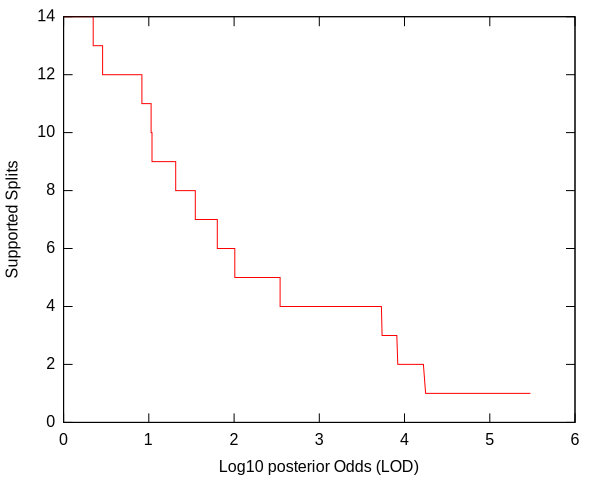
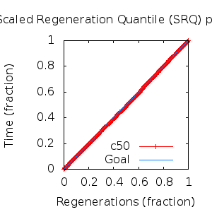
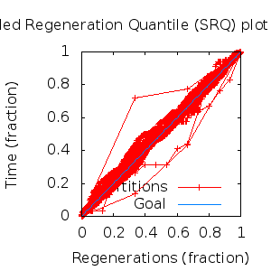

MCMC Post-hoc Analysis: 20 sequences
Data & Model
| Partition | Sequences | Lengths | Alphabet | Substitution Model | Indel Model | Scale Model |
|---|
| 1 |
E5_alpha1_alpha2_gammadelta_delta_epsilonzeta_aa_reduced.fas |
43 - 165 |
Amino-Acids | S1 = lg08+f |
I1 = rs07 |
scale1 ~ gamma[0.5,2] |
Scalar variables
| Statistic | Median | 95% BCI | ACT | ESS | burnin | PSRF-CI80% | PSRF-RCF |
|---|
| prior |
-248.7 |
(-298.7, -203.7) |
21.87 |
12345 |
287
|
1 | 0.9996
|
| prior_A1 |
-301.5 |
(-348.2, -260.2) |
14.23 |
18970 |
293
|
0.9997 | 0.9971
|
| likelihood |
-2846 |
(-2875, -2818) |
23.33 |
11571 |
245
|
1 | 0.9984
|
| posterior |
-3095 |
(-3134, -3061) |
19.12 |
14119 |
335
|
0.9995 | 0.9974
|
| Heat.beta |
1 |
| | | | | |
| Scale[1] |
7.327 |
(4.705, 10.69) |
1.205 |
224001 |
111
|
1 | 0.9979
|
| f:pi[A] |
0.0557 |
(0.04019, 0.07244) |
8.481 |
31837 |
381
|
1 | 1.005
|
| f:pi[R] |
0.03999 |
(0.02491, 0.05754) |
7.9 |
34177 |
406
|
0.9998 | 0.9989
|
| f:pi[N] |
0.0242 |
(0.01332, 0.03666) |
8.274 |
32631 |
442
|
1 | 1.002
|
| f:pi[D] |
0.0407 |
(0.02297, 0.06122) |
8.448 |
31958 |
331
|
1 | 1.003
|
| f:pi[C] |
0.05004 |
(0.0346, 0.06696) |
8.143 |
33156 |
589
|
0.9993 | 1.007
|
| f:pi[Q] |
0.03815 |
(0.024, 0.05412) |
9.496 |
28433 |
324
|
1 | 0.9969
|
| f:pi[E] |
0.01649 |
(0.006648, 0.02896) |
7.91 |
34135 |
377
|
1 | 1
|
| f:pi[G] |
0.03579 |
(0.01989, 0.05452) |
8.573 |
31493 |
322
|
1 | 1.001
|
| f:pi[H] |
0.0342 |
(0.02154, 0.0487) |
7.99 |
33792 |
359
|
1.001 | 1.003
|
| f:pi[I] |
0.06653 |
(0.05216, 0.08153) |
8.853 |
30497 |
254
|
0.9998 | 1.002
|
| f:pi[L] |
0.1725 |
(0.1466, 0.2002) |
8.569 |
31509 |
386
|
1 | 1
|
| f:pi[K] |
0.0307 |
(0.01692, 0.0463) |
8.735 |
30911 |
330
|
0.9993 | 1.005
|
| f:pi[M] |
0.01963 |
(0.0122, 0.02788) |
8.187 |
32979 |
541
|
1 | 1.001
|
| f:pi[F] |
0.06551 |
(0.04917, 0.08268) |
8.238 |
32775 |
854
|
1 | 1.002
|
| f:pi[P] |
0.03067 |
(0.01649, 0.04783) |
8.043 |
33572 |
383
|
1 | 0.9958
|
| f:pi[S] |
0.05005 |
(0.03494, 0.06654) |
8.267 |
32659 |
364
|
1 | 1.006
|
| f:pi[T] |
0.07094 |
(0.05378, 0.08987) |
7.657 |
35260 |
423
|
1 | 0.998
|
| f:pi[W] |
0.01722 |
(0.008072, 0.02824) |
8.427 |
32042 |
367
|
0.9998 | 0.9973
|
| f:pi[Y] |
0.03346 |
(0.02233, 0.04625) |
8.293 |
32556 |
265
|
1 | 0.997
|
| f:pi[V] |
0.09817 |
(0.07913, 0.1179) |
8.368 |
32264 |
485
|
0.9998 | 0.9984
|
| rs07:mean_length |
9.472 |
(6.393, 13.39) |
10.79 |
25020 |
145
|
1 | 1.001
|
| rs07:log_rate |
-3.754 |
(-4.159, -3.32) |
4.305 |
62724 |
51
|
1 | 0.9962
|
| |A1| |
231 |
(211, 267) |
43.12 |
6261 |
762 |
1 | 1.002
|
| #indels1 |
34 |
(28, 40) |
13 |
20775 |
194 |
0.8889 | 0.998
|
| |indels1| |
306 |
(263, 361) |
20.83 |
12960 |
292 |
0.9897 | 1
|
| #substs1 |
498 |
(470, 512) |
31.54 |
8561 |
455 |
0.9419 | 1.001
|
| Scale1*|T| |
8.475 |
(7.47, 9.542) |
4.098 |
65882 |
191
|
1 | 1.001
|
| |A| |
231 |
(211, 267) |
43.12 |
6261 |
762 |
1 | 1.002
|
| #indels |
34 |
(28, 40) |
13 |
20775 |
194 |
0.8889 | 0.998
|
| |indels| |
306 |
(263, 361) |
20.83 |
12960 |
292 |
0.9897 | 1
|
| #substs |
498 |
(470, 512) |
31.54 |
8561 |
455 |
0.9419 | 1.001
|
| |T| |
1.158 |
(0.7427, 1.641) |
1 |
270003 |
104
|
1 | 0.998
|
Phylogeny Distribution


Alignment Distribution
Partition 1
|
|
|
Diff |
|
Min. %identity |
# Sites |
Constant |
Informative |
| Initial |
FASTA |
HTML |
Diff |
|
1.39% |
165 |
1 (0.606%) |
162 (98.2%) |
| Best (WPD) |
FASTA |
HTML |
|
AU |
0.787% |
226 |
1 (0.442%) |
191 (84.5%) |
Mixing
Statistics: | scalar burnin | 854 | | scalar ESS | 6262 | | topological ESS | | | ASDSF | NA | | MSDSF | NA | | PSRF CI80% | 1.001 | | PSRF RCF | 1.007 |
|  |
Analysis
directory: /work/awillemsen/bali-phy/AlphaPVs_E5_aa_new_reduced
version: 3.3
| chain # | burnin | subsample | Iterations (after burnin) | command line | subdirectory |
|---|
| 1 |
10000 |
1 |
90000 |
bali-phy E5_alpha1_alpha2_gammadelta_delta_epsilonzeta_aa_reduced.fas -s 13451 --smodel lg08 -i 100000 -n AlphaPVs_E5_red_alpha1_alpha2_gammadelta_delta_epsilonzeta |
AlphaPVs_E5_red_alpha1_alpha2_gammadelta_delta_epsilonzeta-1 |
| 2 |
10000 |
1 |
90000 |
bali-phy E5_alpha1_alpha2_gammadelta_delta_epsilonzeta_aa_reduced.fas -s 82348 --smodel lg08 -i 100000 -n AlphaPVs_E5_red_alpha1_alpha2_gammadelta_delta_epsilonzeta |
AlphaPVs_E5_red_alpha1_alpha2_gammadelta_delta_epsilonzeta-2 |
| 3 |
10000 |
1 |
90000 |
bali-phy E5_alpha1_alpha2_gammadelta_delta_epsilonzeta_aa_reduced.fas -s 26345 --smodel lg08 -i 100000 -n AlphaPVs_E5_red_alpha1_alpha2_gammadelta_delta_epsilonzeta |
AlphaPVs_E5_red_alpha1_alpha2_gammadelta_delta_epsilonzeta-3 |
| P(data|M) = -2875.889 +- 0.324
|
Complete sample: 7798
topologies |
95% Bayesian credible interval: 2375 topologies |
Model and priors
Tree (+priors)
| topology | ~ uniform on tree topologies |
| branch lengths | ~ iid[num_branches[T],gamma[0.5,div[2,num_branches[T]]]] |
Substitution model (+priors)
| S1 | = |
lg08+f
| f:pi | ~ | dirichlet_on[letters[@a],1]
|
|
Indel model (+priors)
| I1 | = |
rs07
| rs07:log_rate | ~ | laplace[-4,0.707]
|
| rs07:mean_length | ~ | exponential[10,1]
|
|
Scales (+priors)
{kind=link}
{kind=link}
{kind=link}
{kind=link}
{kind=link}
{kind=link}
{kind=link}
{kind=link}